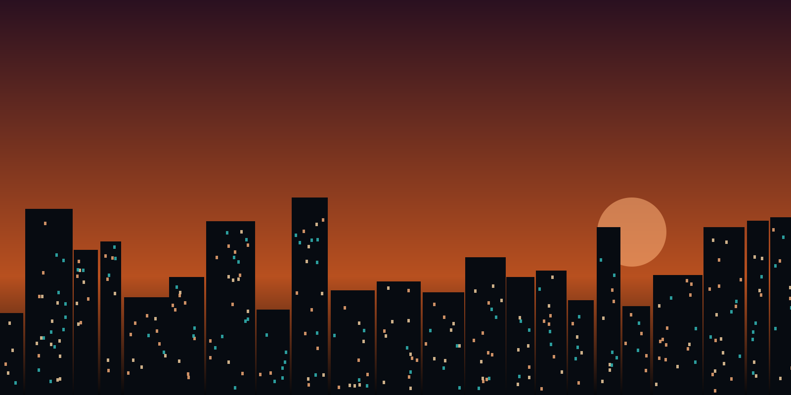

PYRO: JARVIS-style AI assistant
Holds a conversation, searches Google, takes screenshots, creates folders, writes code, opens the apps it has access to and manages my schedule app.
Private project, not open source. Planned as a future product.
Built
Games, apps and an AI assistant I built, and what I'm building next.
Holds a conversation, searches Google, takes screenshots, creates folders, writes code, opens the apps it has access to and manages my schedule app.
Private project, not open source. Planned as a future product.
BuiltA racing game, an MMORPG and a survival game. All still being built and not released yet.
In developmentTested over a thousand game bots and automation scripts, written by me and by friends. Every bug is reported with clear, reproducible steps.
OngoingChecks a set of pages and form inputs automatically and prints a pass/fail report.
BuiltSimple Flash-style browser games, some original designs and some recreations of classics. HTML, CSS and JavaScript.
BuiltSeveral Java games with increasing difficulty and multiple levels, plus an early alpha of a Minecraft-style voxel game.
BuiltA scheduling app written in Java. Later connected to PYRO so the assistant can manage it.
BuiltA bug report writer, the Bug Squash game and a command-line demo assistant. HTML, CSS and JavaScript here, and Java servlets, JSP and JSTL in the full version.
LiveTest forms and layouts on phone and desktop. Each defect gets steps, expected result and actual result.
In progress